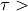
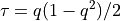
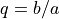

Lenstool data files
Input files
input potfile catalog
The file starts with header #REFERENCE 0 if RA, DEC are given in absolute ICRS coordinates, or #REFERENCE 3 RA_REF DEC_REF, if RA, DEC are in relative arcsec.
Eath line in this file corresponds to a galaxy to model in the potfile. The columns in this file depend on the file format given as argument to the filein keyword in the parameter file.
Format specifier 1 or 3
galaxy id
ra - right ascension (relative arcsec if format 3)
dec - declination (relative arcsec if format 3)
a - major-axis in arcsec
b - minor-axis in arcsec
theta - in degrees from reference East-West axis
magnitude - magnitude used for the scaling-relation
luminosity - not used
Format specifier 2 or 4
type - potential model id, as described in PIEMD
ra - right ascension in relative arcsec
dec - declination in relative arcsec
emass - ellipticity. This is model dependent (see PIEMD )
theta - in degrees from reference East-West axis
rckpc - core-radius in kpc for PIEMD (type=81) or scale-radius for NFW (type=12)
rcutkpc - cut-radius in kpc for PIEMD (type=81) or R200 for NFW (type=12)
sigma - velocity dispersion in km/s
z - redshift
Format specifier 8
galaxy id
ra - right ascension in relative arcsec
dec - declination in relative arcsec
a - major-axis in arcsec
b - minor-axis in arcsec
theta - in degrees from reference East-West axis
magnitude - magnitude used for the scale-relation
luminosity - not used
effective radius - used to infer sigma from Fundamental plane relation (Bernardi et al. 2003)
Format specifier >4
galaxy id
ra - right ascension in relative arcsec
dec - declination in relative arcsec
a - major-axis in arcsec
b - minor-axis in arcsec
theta - in degrees from reference East-West axis
magnitude - magnitude used for the scaling-relation
z - redshift
input images catalog
The file starts with a header #REFERENCE 3 RA_REF DEC_REF, which specifies the reference coordinates for the images in the catalog.
Each line in this file corresponds to multiple or single images. Multiple images must have the same root name, and be listed one after the other in the catalog. The columns in this file depend on the specified int value.
Format specifier 1:
image id
ra - in arcsec relative to the reference in the header
dec - in arcsec relative to the reference in the header
a - major-axis in arcsec
b - minor-axis in arcsec
theta - in degrees from reference East-West axis
redshift
magnitude
Format specifier 2:
image id
ra - in arcsec relative to the reference in the header
dec - in arcsec relative to the reference in the header
a - major-axis in arcsec
b - minor-axis in arcsec
theta - in degrees from reference East-West axis
redshift
magnitude
Sersic index / weak-lensing e1 variance
unused / weak-lensing e2 variance
Format specifier 3:
image id
ra - in arcsec relative to the reference in the header
dec - in arcsec relative to the reference in the header
e1 - weak-lensing shear e1
e2 - weak-lensing shear e2
theta - in degrees from reference East-West axis
redshift
weak-lensing e1 variance
weak-lensing e2 variance
Output files
clump.dat
The file clump.dat is produced each time you run lenstool in interactive mode (default mode), i.e. when lenstool gives you the possibility to edit the parameter file before processing it. You can also force the production of this file by setting the keyword verbose to 1 in the section RunMode.
This file contains as many lines as potentials defined in the parameter file. The columns in this file are:
type
relative x center in arcsec
relative y center in arcsec
major axis in arcsec
minor axis in arcsec (computed from core radius or cut radius if defined)
orientation
ellipticity of the matter density
core radius in kpc
minor to major axis ratio q
velocity dispersion
redshift
apparent magnitude
identifier
index in the Lenstool internal potential list
pot.dat
image.all
The file image.all is produced each time you activate the image keyword in the [RunMode] section.
The file starts with a header #REFERENCE 3 RA_REF DEC_REF, which specifies the reference coordinates for the images in the catalog.
Each line in this file corresponds to a counter image of an image in the input catalog. The columns in this file are:
image id
ra - in arcsec relative to the reference in the header
dec - in arcsec relative to the reference in the header
a - major-axis in arcsec
b - minor-axis in arcsec
theta - in degrees from reference East-West axis
redshift
predicted magnitude
image.dat
The image.dat file is the same as the image.dat file, but with absolute WCS coordinates. The header is #REFERENCE 0 RA_REF DEC_REF.
Also the image.dat file does not contain the images that are considered as giant arcs, i.e. when their distortion parameter large.
The distortion parameter is defined as

where  is the image axis ratio.
source.dat
Same as image.dat but for the source positions. There is one source per input image.
dist.dat
Statistics on the predicted images.